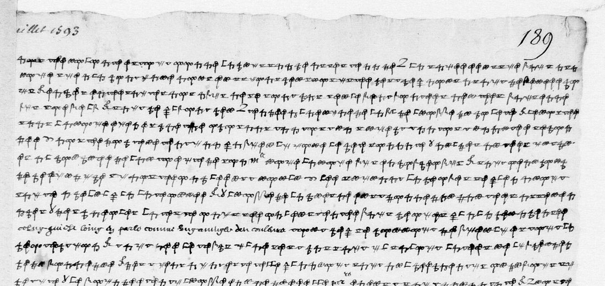
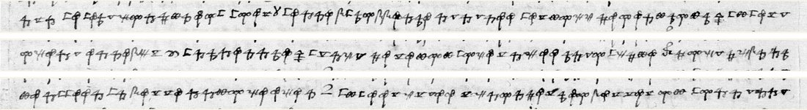

At a glanceKnown key applied · 1,764 of 1,790 cipher words read as sense (98.5%)
- The letters
- Mayenne’s agent, the office’s “Baudouyn Desportes”, writes from Paris on 22 July 1593 to the Pope’s nephew Pietro Aldobrandini and to Girolamo Frachetta in Rome. The royal office intercepted both and noted twice that it had not deciphered them.
- Where
- Bibliothèque nationale de France, fr. 3984 f. 186r–v (no. 88) and f. 189 (no. 90), Gallica btv1b9060633d views 347–348 and 353. Part of this project’s catalogue item 20.
- The cipher
- The Catholic League’s polyphonic cipher, as reconstructed by Satoshi Tomokiyo. Eleven drawn signs each stand for two letters (a/n, b/o … m/z), with signs for que, qui, pour, et and some names.
- How it was deciphered
- Paolo Rosson, with Claude Opus 5.5, trained a line recogniser on 6,794 signs of the same hand, aligned with the office’s decipherments of the two sister letters. A period-French decoder then chose one letter of each pair. Checked here against the key, our own labels and the images; Brett Burford’s independent re-reading agrees.
- What it says
- The Legate presses for a king’s election just when Navarre wins men over “par l’aparance qu’il fait de se vouloir faire catolique, et doit dimanche aller a la messe”. Spain gives only words, and a truce is needed.
- Still open
- Three single name signs, three short groups lost in the gutter of f. 186v, and the people behind the cover names of f. 189 (“nostre oncle”, “l’homme de la chesne”).
- Credit
- The reading is Paolo Rosson’s (1 October 2026), the key Satoshi Tomokiyo’s. Brice Dudout reported the result. This project’s own attempt of 17 September 2026 did not get there.
01 The letters
On 22 July 1593 the League in Paris sent a packet to Rome. Henri of Navarre had announced his conversion, the conference of Suresnes was ending in a truce, and the Spanish party was pressing the Estates to elect a king. Four letters of that day, all written by Mayenne’s agent in the same hand and the same cipher, were intercepted and are now bound together in BnF fr. 3984. They went to Pope Clement VIII (f. 176–176v and f. 179r), to the bishop of Lisieux (f. 188), to the Pope’s nephew Cardinal Pietro Aldobrandini (f. 186) and to Girolamo Frachetta, a political writer in the papal service (f. 189).
The royal office deciphered the first two; its decipherments are bound beside them (f. 177–178 and f. 184–185). It never did the other two. Its register of 1593 says of the letter to Aldobrandini that “l’on n’a eu loisir encores de deschiffrer”, and the letter to Frachetta “n’a non plus encore esté deschiffrée” (BnF fr. 3983 f. 141v, entries 13 and 14). The backs of both letters say the same. Tomokiyo’s page on the cipher lists f. 186 as “enciphered passages are undeciphered” and f. 189 as “undeciphered”.
The office signed its decipherments “Baudouyn Desportes”, and the BnF names the writer Baudouin-Desportes. Whether he is Mayenne’s secretary Baudouin or Thibault Desportes, sieur de Bévilliers, Mayenne’s envoy to Rome, is still open. Rosson’s prior_art/scholarship.md sets out the evidence.

02 The cipher and why it was hard
Tomokiyo reconstructed the League’s cipher of 1592–93 from deciphered letters. Each of eleven signs stands for two letters of the alphabet split in half: a/n, b/o, c/p, d/q, e/r, f/s, g/t, h/u, i/x, l/y, m/z. Further signs stand for que, qui, pour and et, and a handful of signs stand for persons: the Pope, Mayenne, the King of Navarre, the King of Spain, the Legate, Guise, the Infanta. So the key was never the problem. The reader has to name each sign, and then choose one of its two letters from the context.
The two letters hold about 6,700 signs, drawn small and fast. A sign named wrongly spoils the words around it, because each sign carries two letters. This project tried on 17 September 2026. It aligned the cipher of f. 188v with its decipherment, about 1,100 labelled signs, and trained classifiers on them. They named only 73–79% of held-out signs correctly; at that rate the decoder recovered 30–40% of the letters of a known text. The folder was closed with a note on what would reopen it: a larger labelled set from f. 176 and its decipherment f. 177.
03 How Rosson deciphered them
Paolo Rosson, working with Claude Opus 5.5 in Claude Code, took that route. He transcribed the office’s decipherment of the letter to the Pope (f. 177–178, 74 lines) and aligned it, with f. 188v and its decipherment, sign by sign. That gave 112 lines and 6,794 labelled signs in the same hand. He corrected the reference texts to the cipher’s own spelling (“espagnolz”, “fist”). A line recogniser trained on these lines names the signs, and a decoder with a model of period French and a lexicon of 77,004 word forms chooses one letter of each pair. Then the model checked every line against the page image.
His measurements, from rosson/accuracy.md:
- On held-out lines (f. 188v ll. 7–10, f. 176r ll. 20–23; 482 signs, 505 letters, labelled by eye before any model was trained): 98.5% of signs and 95.6% of letters correct.
- On a blind test, a third cipher page of the letter to the Pope (f. 179r, 21 lines) found after the models were trained and scored against the office’s decipherment on f. 178r: 99.7% of signs (4 errors in 1,301) and 98.3% of letters.
- On the unread pages, nine models disagree on 1.0% of signs (f. 189), 1.3% (f. 186r) and 2.0% (f. 186v).
The key is Tomokiyo’s, applied unchanged. No key was recovered, so the method is “read with known key”. Here the hard part was transcription, not cryptanalysis.
04 The letter to Frachetta (f. 189)
Rosson’s reading, lines 1–33 of the cipher, with his conventions: u/v and i/j set as in modern use, [ ] editorial, (?) doubtful, { } clear text in the original. The full file with his notes on each doubt is targets/desportes1593/rosson/f189_reading.txt.
Nostre volonté estoit bonne, la puissance asses grande pour la faire reussir; mais a savoir si en la continue nous eussions peu subsister, c’est ce qui nous a fait demeurer cois. Et en ces entrefaites nos amis ne se sont pas seulement montrés neutres, mais ennemis formelz, et fait ce qu’ilz ont peu pour tendre a la ruine de l’amy(?) de l’homme du colege et le vostre, sans l’avoir rien espargné, oposans tantost un sujet tantost un autre, secondés par nostre docteur Gratian, qui a mieulx joué le personnage que nul des autres, jusques a y coucher de l’autorité de son {M[aist]re}, voir[e] l’avoir mis en compromis et fait beaucoup de prejudice. Si nostre oncle eust voulu parler suivant la promesse qu’il en avoit faite a celuy qui l’ala trouver, et que l’homme de la chesne eust donné d’autres asseurances que des paroles, la teste baissee on y eust entré. Mais croies qu’il n’y a peu a penser {celuy qui est loing en parle comme ung aveugle des couleurs. Or(?)} tout ce qui se pouvoit de mieulx estoit la protection et gaigner le temps. Il ne s’est pas fait; il faloit la trefve.
L’imprudence du monarque et des siens ai[a]nt esté telle qu’il n’avoit fait nul preparatif, ou du moins si petit[e] que le moindre gentilhomme en une querelle en eust fait davantage. Et pour vostre costé, ç’a esté un autre bel acte que le licentiement que feist vostre auditeur(?). Je veulx(?) croire ce que vous m’escrivez, qu’il n’y a nul changement; toutesfois c’est un fait estrange que nostre Poquinteste ne nous ait rien raporté de {part[iculi]er}, et que l’on nous aie dit ce que l’on a voulu; et ce n’a esté que des paroles, les plus extravagantes que j’eusse pensé. Perdre tout, voire estre privé de paradis, j’eusse passé bien plus avant: se travailler, se ruiner, faire ce [qui] se peut, tant que sans nostre prudence on ne dureroit pas une heure; et pour recompense bastir une ruine. Or je ne serois pas si charitable, je le confesse.
Si nostre ami du colege en vouloit parler a l’homme de la chesne, il obligeroit infinyment nostre amy, qui est tout sien. Et a ce qui regarde vostre pension, cela ne se peult, car nul ne l’asiste que le prelat a qui la piece est affectee, et il n’est pas temps de luy rien lever. Ç’a esté vostre malheur et le mien. Courage, il se presentera d’autres occasions. Je tien que l’on aura la trefve dans peu de jours. Le voiage de [sign not identified] a esté le plus pernicieulx que chose du monde: il a fait changer de religion au [roy de Navarre] et offre [.5c?] mil escus. Leur party estoit ruiné sans se changement. Nostre legat a fait ce qu’il a peu pour couvrir l’Espagnol; il a embrassé leur affaire avec tant d’ardeur qu’il a negligé ce qui estoit du service de son {M[aist]re}, jusques a n’avoir fait tenir un seul de nos brefz(?), qui eussent infiniment profité; mais ce n’estoit pas ce qu’il desiroit(?), au contraire, de haster le desmembrement de nostre estat. Par la lettre de [Sa Sainteté(?)] vous saurés au vray l’estat general de nos affaires. {Je vous baise les mains … A Paris ce xxije Juillet 1593.}
Translation (Rosson’s, shortened): Our will was good and our power great enough … Our friends showed themselves not only neutral but open enemies … seconded by our Doctor Gratian, who played the part better than any of the others … If our uncle had been willing to speak as he promised the man who went to see him, and if the man of the chain had given other assurances than words, we would have gone in head down … The best that could be done was protection and to gain time; the truce was necessary … I hold that we shall have the truce in a few days. The journey of […] was the most pernicious thing in the world: it made the King of Navarre change his religion … Our legate did what he could to cover the Spaniard; he neglected his master’s service, so far as not to deliver even one of our briefs … to hasten the dismemberment of our state.
This is the only letter of the four written in cover names: “nostre oncle”, “l’homme de la chesne”, “l’homme du colege”, “nostre docteur Gratian”. The name in line 17 is written in clear in the letter to Lisieux (“par le retour de poquinteste”, f. 188r, copied on f. 184r), so it is a person’s name, not a misreading.
05 The letter to Aldobrandini (f. 186)
A clear opening of eleven lines (“Si je n’ay escrit a Sa Sainteté et a Vre Seigneurie Illme aussi souvent que le devoir me le commande …”) runs into 41 lines of cipher on the recto, with short clear phrases between, and 33 on the verso. The full reading and translation are in rosson/f186_reading.txt. Some passages:

- The papal commissaries (r11–17): from “Mr Mateouci” on, “eulx seulx ont plus aporté de ruine aux affaires que les ennemis”. He has sent the Pope a discours on Matteucci’s conduct, and Malvasia and Mayenne have fallen out.
- Spain (r17–20): “l’armee du [roy d’Espagne] n’a rien fait sinon de demeurer sur la frontiere … et qui s’est retiree seulement sur un bruit que [le roy de Navarre] l’aloit chercher”.
- The Mass (r20–27): the Legate wants an election “lors que l’ennemy commence a gagner les voix … et doit dimanche aller a la messe”, and everyone is “las de servir de fable a toute la crestienté”. Henri IV abjured and heard Mass at Saint-Denis on Sunday 25 July.
- His mission in Rome (r32–42): he asked for “un de la maison de Bourbon”, then for “le mariage de [l’Infante] avec un de nos princes”, and was refused both and sent back to the Legate and the Duke of Feria. He rejected a candidate “qui me fust proposé de [Sa Sainteté], que a la verité eust esté le meilleur”.
- Mayenne and Guise (v17–21): if Aldobrandini knew how “Mr [le Legat] s’est monstré leur partisan pour deschirer nostre pauvre estat”, he would wonder at “la patience de [M. du Maine], qui s’est porté jusques a vouloir accepter Mr [de Guise] pour roy, pourveu que l’on y feist voir le moien de le pouvoir deffendre”.
Rosson’s comparison.md sets the two letters against the two that the office read. The forecast of the Mass was not news to the office: the letter to Lisieux says “Il se doibt faire cath. dimanche” (f. 184r). Seven passages are in the unread letters only, among them the attack on Matteucci and Malvasia, the two refused requests, the Pope’s own candidate, Mayenne’s readiness to accept Guise, and the Legate holding back briefs. Three passages occur in both a read and an unread letter. The facts agree and the words differ, which is an independent check of the reading.
06 What was checked here
On 20 October 2026 Rosson’s repository (pangoleen/desportes-1593, commit 33c854a) was read as data. Its code was not run; the checks below used scripts written here.
- The decode follows the key. His raw output gives every word with the string of sign classes the recogniser gave. Of 1,533 letter words, 1,524 spell exactly under Tomokiyo’s pairs. The other 9 use the recogniser’s second-choice class, which the output gives beside the first. The output holds 2,088 signs on f. 189, 2,565 on f. 186r and 2,046 on f. 186v.
- Our labels agree with his. The 100 signs of f. 188v ll. 3–4 that this project labelled by hand in September all have the same class in his gold transcripts.
- The images. F. 186r ll. 21–23 (above) and the opening words of f. 189 (“Nostre volonté estoit bonne, la …”) were checked again sign by sign on the Gallica image with this project’s reference sheet of the hand. Every sign has the class his output gives. The clear insertions of f. 189 fall where his reading puts them.
- An independent reading. Brett Burford, also with Claude Opus 5.5, made a second reading by another method before opening Rosson’s text: Claude named the signs against a reference sheet in three passes, and the passes were voted (BravoBravoIX/desportes-1593-rereading, 18 October 2026). It agrees with Rosson’s on 95.9% of signs (f. 189), 93.1% (f. 186r) and 93.8% (f. 186v). Burford reports that wherever the two differ, Rosson’s is the better reading.
Extent. His output holds 1,790 cipher words. Five are left unread and 21 carry a question mark. Not counting either, 1,764 (98.5%) read as sense, over the bar of 95% of the cipher giving sense.
07 Priority
No reading earlier than Rosson’s is known. The office in 1593 did not decipher the letters, and Tomokiyo’s page (last changed in 2023) lists them with no decipherment. This project’s attempt of September 2026 did not get there. Rosson published his reading, version 0.2, on 1 October 2026. Tomokiyo’s article “An Intercepted Report of Henry IV’s Upcoming Attendance at Mass in a Polyphonic Cipher” (first posted 3 October 2026) presents it as the first full decipherment, with a partial check of his own and three corrections to the clear text, which Rosson adopted. Burford’s re-reading followed on 18 October. Maxim Egorov has also published an analysis of the letters, not read here. Brice Dudout drew this project’s attention to the result on 19 October.
Rosson also deciphered a slip in a variant of the same cipher, BnF fr. 4715 f. 61 (Gallica btv1b52509819x view 137), where Tomokiyo had read five short spans. His reading is copied to rosson/fr4715_f61_reading.txt; it was not checked here.
08 What remains uncertain
- F. 189 l. 26: the sign for the traveller whose journey “a fait changer de religion au [roy de Navarre]”. It occurs once and in no sister letter.
- F. 189 l. 32 and f. 186r l. 30: two single person or title signs read from context (“Sa Sainteté(?)”, “pape(?)” before “Gregoire”).
- F. 186v ll. 1–3: three short groups (about nine signs) where the binding hides one or two signs of each line on the microfilm. They are not read.
- The cover names of f. 189 are read as words, but no key or sister letter says who they are. Rosson’s guesses: “nostre oncle” the Pope, “l’homme de la chesne” Spain or its ambassador, “l’homme du colege” a cardinal, “docteur Gratian” the Legate or a man of his legation.
- 21 words carry a question mark in his files (7 on f. 189, 14 on f. 186). Each comes with his note on the sign classes. No palaeographer has yet checked the whole of either reading.
- An intended recipient may have read a first copy in Rome; the letter to the Pope is marked “Duplicata”. Copies Frachetta gave the Spanish ambassador in September 1593 (Simancas, Estado leg. 961–963) have not been checked.
09 Sources
- BnF fr. 3984, Gallica btv1b9060633d: f. 186r–v views 347–348, f. 189 view 353; sister letters f. 176 (views 327–328) with decipherment f. 177–178, f. 188 (views 351–352) with decipherment f. 184–185 (views 343–345). Register BnF fr. 3983 f. 141v.
- Paolo Rosson with Claude (Anthropic), “Two cipher letters of July 1593, read for the first time”, 2026, github.com/pangoleen/desportes-1593 (text CC BY 4.0; reading v0.2, 1 October 2026).
- S. Tomokiyo, “A Polyphonic Substitution Cipher of the Catholic League (1592–1593)”, cryptiana mayenne.htm (the key), and “An Intercepted Report of Henry IV’s Upcoming Attendance at Mass in a Polyphonic Cipher”, polyphonic1593.htm, 3–18 October 2026.
- B. Burford, “An independent re-reading of the Baudouin-Desportes cipher letters of 22 July 1593”, github.com/BravoBravoIX/desportes-1593-rereading, doi:10.5281/zenodo.23470957.
- This project’s attempt of 17 September 2026 and the checks of 20 October:
targets/desportes1593/NOTES.md.
Notes, our September scripts and a credited copy of Rosson’s reading files: targets/desportes1593/. The other items of catalogue 20 are in targets/sega1593/ (Sega, nos. 6 and 8, open) and targets/mauclerc1593/ (read at the time).